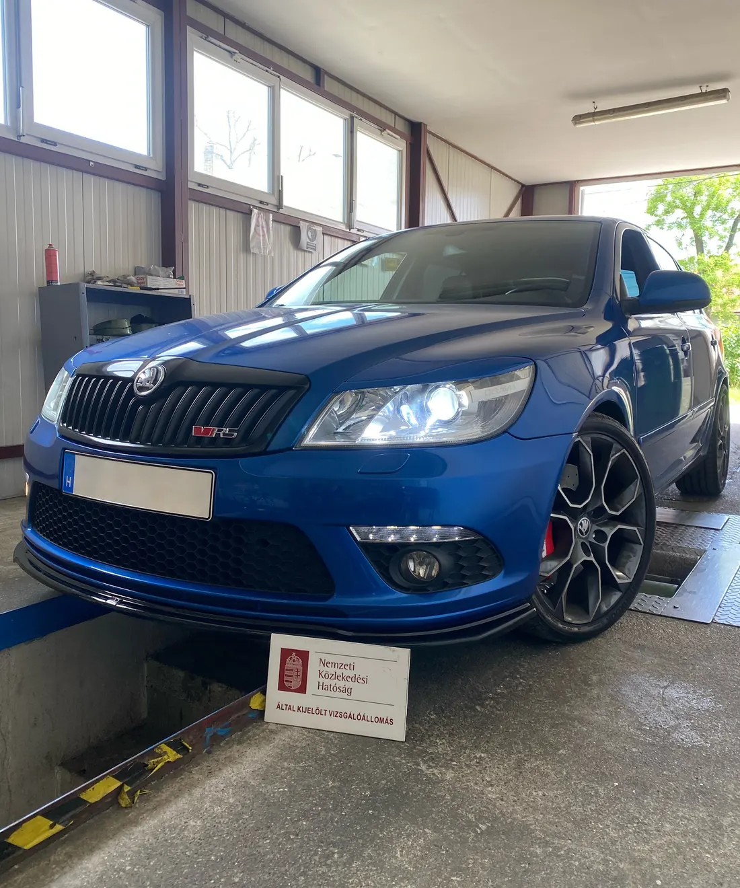
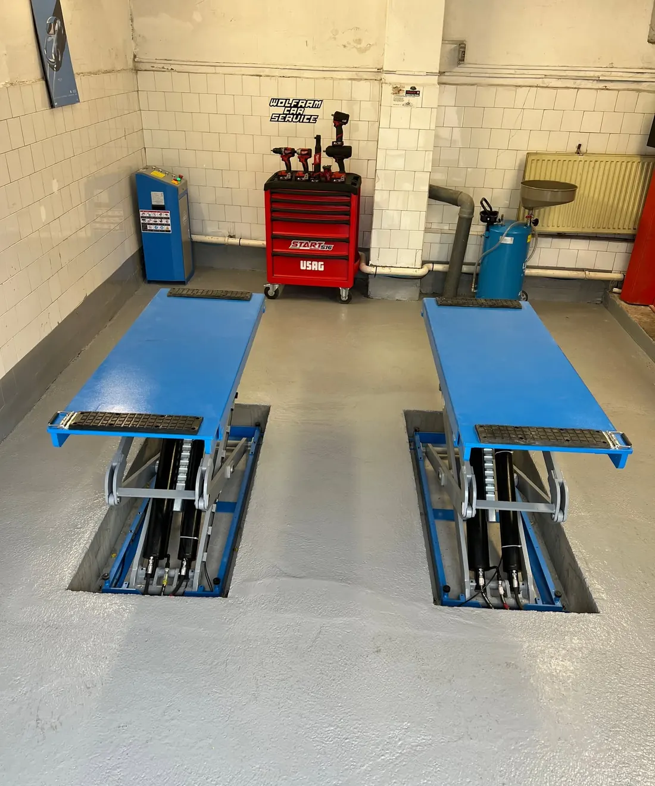
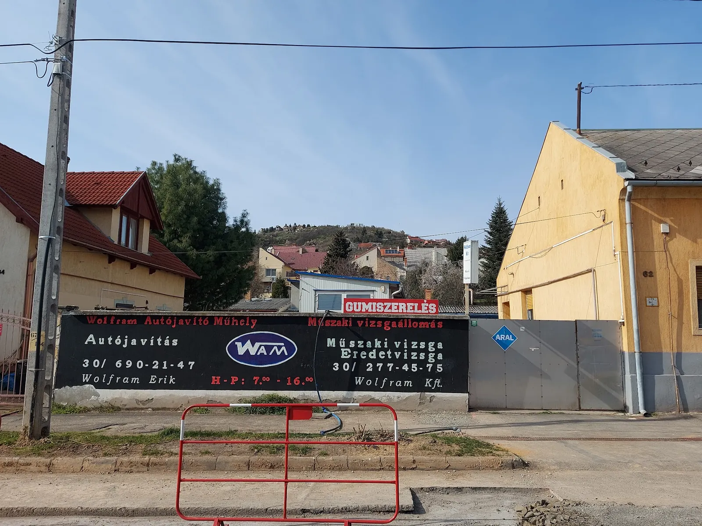

Pécs, Szigeti út 62. · 1965 óta
Autójavítás és műszaki vizsga egy udvarban, Pécsen
Javítás, szerviz, gumi és vizsga egy helyen. Ha a vizsga előtt javítani kell valamit, nem kell máshová vinnie az autót.
4,5 · 90 Google-vélemény · Mit hozzak a vizsgára?

Wolfram Erik műhelye
Javítás, szerviz és gumi egy helyen
Személygépjárművek javítását, szervizelését és diagnosztikáját vállaljuk. Ha műszaki vizsga előtt áll, átnézzük az autót, és elmondjuk, mit kell megcsinálni.
- Javítás és szervizelésszemélygépjárművek
- Diagnosztika
- Olajcsere
- Gumiszerelés és centírozásgumibeszerzést is vállalunk
- Vizsga előtti átnézésa vizsgasor ugyanebben az udvarban van
- Műszaki- és eredetvizsgaa Wolfram Kft. vizsgaállomásán

Wolfram Kft. vizsgaállomása
Vizsgára készül? Nézze meg, mit hozzon
Válassza ki a járművet és az ügyet: megmutatjuk, mit hozzon magával, és melyik számon jelentkezzen be.
Válasszon egyet:
Mire jön?
Személyautó – műszaki vizsga
Bejelentkezés után a Szigeti út 62.-ben, hétfőtől péntekig 7:00–16:00 között.
Ezt hozza magával:
Nem biztos benne, hogy átmegy? A vizsga előtt a műhely átnézi: 06 30 690 2147
A lista tájékoztató jellegű, bejelentkezéskor telefonon pontosítjuk.
Rólunk
1965 óta a Szigeti úton
Családi műhely: ugyanabban az udvarban szereltünk autót, mértünk zöldkártyát, és ma itt működik a javítóműhely és a vizsgasor is.
- 1965
Autószerelés és villamossági javítás a Szigeti úti műhelyben.
- 2002–2009
Környezetvédelmi mérés, vagyis zöldkártya.
- 2010
Decemberben megnyílik a saját műszaki vizsgasor.
- 2022
Turul Autó GOLD díj az ügyfelek értékelései alapján (9,2/10).

Az udvarunkról
Hétköznapi autótól a ritkaságig: néhány jármű, amely nálunk járt.
Amit az ügyfeleink írnak
90 Google-vélemény alapján
Kedvesek, segítőkészek! Eredet vizsga, műszaki vizsga, autó javítás, stb. bátran forduljanak hozzájuk!
Lerobbantam a kocsimmal Pécsen. Mivel nem vagyok helyi, nagyon megrémültem. A férjem 100 km távolságból telefonált a szervizbe, ahol azonnal fogadtak, és egy fiatalember meg is oldotta a problémát.
Kérjen időpontot
Írja meg, mire jön, és visszahívjuk egyeztetni. Ha sürgős, hívja közvetlenül a megfelelő számot.
- Javítás, szerviz, gumi – Wolfram Erik06 30 690 2147
- Műszaki- és eredetvizsga – Wolfram Kft.06 30 277 4575
Gyakori kérdések
Milyen járműveket vizsgáztatnak?
Személygépkocsit, kisteherautót 3,5 tonnáig, motorkerékpárt és utánfutót. Műszaki vizsgát és eredetvizsgát is végzünk.
Melyik számot hívjam?
Műszaki vizsgára és eredetvizsgára a 06 30 277 4575-ön lehet bejelentkezni (Wolfram Kft.). Javításra, szervizre és gumiszerelésre a 06 30 690 2147-et hívja (Wolfram Erik).
Mikor vannak nyitva?
Hétfőtől péntekig 7:00 és 16:00 között, hétvégén zárva.
Mit vigyek, ha nem az én nevemen van a jármű?
Kitöltött meghatalmazást. A nyomtatvány innen letölthető (PDF).
A vizsga előtt át tudják nézni az autót?
Igen. A műhely ugyanabban az udvarban van, mint a vizsgasor: a vizsga előtt átnézzük az autót, és elmondjuk, mit kell rendbe tenni.
Kapcsolat
Cím és nyitvatartás
7624 Pécs, Szigeti út 62.
Hétfő–péntek 7:00–16:00, szombat–vasárnap zárva
Útvonaltervezés